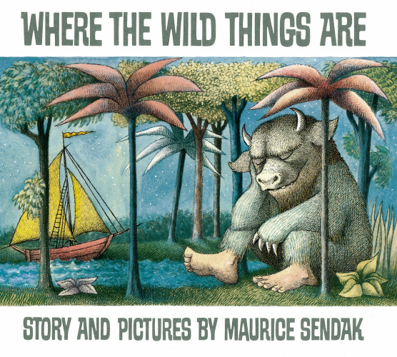
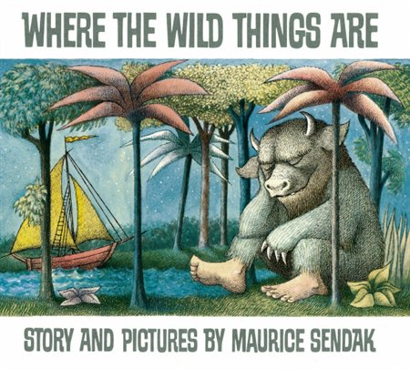

On a Magical Do-Nothing Day Because she loved Monkey Puzzle On a Magical Do-Nothing Day Beatrice Alemagna Same wandering-child shape, same slow pages before the turn. Find at librarySave for laterAlready read itNot interested
Stick Man More Julia Donaldson Stick Man Julia Donaldson · you've read 6 of hers One of hers you haven't got to yet. Find at librarySave for laterAlready read itNot interested
Life on Mars Someone new to you Life on Mars Jon Agee The joke sits with the reader, not the character. Find at librarySave for laterAlready read itNot interested
Tyrannosaurus Drip She's into dinosaurs right now Tyrannosaurus Drip Julia Donaldson & David Roberts You mentioned dinosaurs in June. Still going? Find at librarySave for laterAlready read itNot interested
Small in the City For you, reading it aloud Small in the City Sydney Smith Short, no rhyme, and lovely to read out loud on the fortieth go. Find at librarySave for laterAlready read itNot interested
 A classic, in case you've missed it Where the Wild Things Are Maurice Sendak Know it already? "Already read it" tells Bookkin what's on your shelf. Find at libraryAlready read itNot interested
Small in the City For you, reading it aloud Small in the City Sydney Smith Short and no rhyme — worth knowing if that suits you. Find at libraryAlready read itNot interested
✓ Do-Nothing Day Because she loved Monkey Puzzle On a Magical Do-Nothing Day Beatrice Alemagna Wordless stretches, same slow build.
✓ Rooster / World More Eric Carle The Rooster Who Set Out to See the World Eric Carle · you've read 3 of his Counting and repetition.
＋ Small in the City For you, reading it aloud Small in the City Sydney Smith Quiet city walk, feelings left unsaid.
＋  A classic, in case you've missed it Where the Wild Things Are Maurice Sendak Know it already? "Already read it" tells Bookkin your shelf.
On a Magical Do-Nothing Day Someone new to you On a Magical Do-Nothing Day Beatrice Alemagna Same wandering-child structure, same slow pages before the turn. Find at librarySave for laterAlready read itNot interested
Life on Mars Someone new to you Life on Mars Jon Agee The joke sits with the reader, not the character — the thing that made her ask for Monkey Puzzle again. Find at librarySave for laterAlready read itNot interested
Rooster / World More Eric Carle The Rooster Who Set Out to See the World Eric Carle · you've read 3 of his Cumulative build, animals joining one by one. Find at librarySave for laterAlready read itNot interested